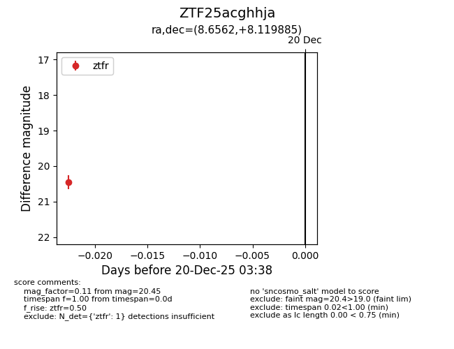
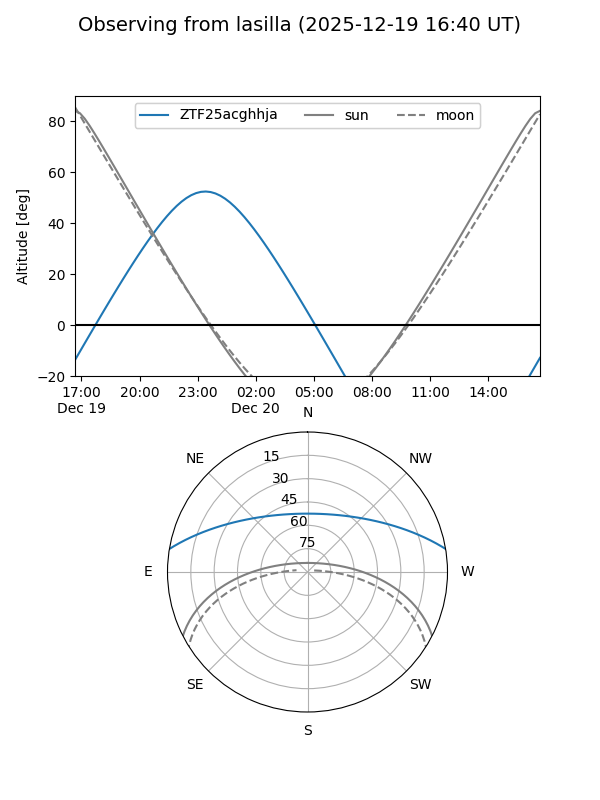
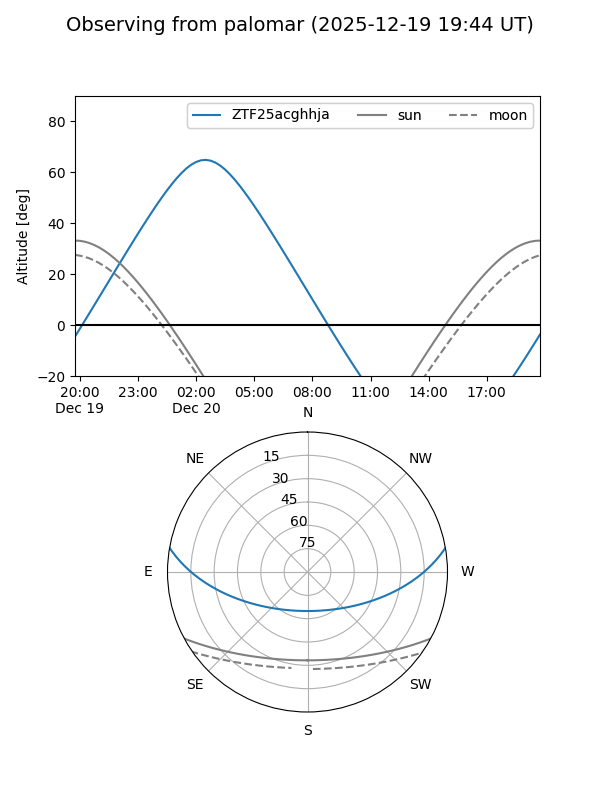

ZTF25acghhja
Target ZTF25acghhja at 2025-12-20 03:39
Aliases and brokers:
FINK: fink-portal.org/ZTF25acghhja
Lasair: lasair-ztf.lsst.ac.uk/objects/ZTF25acghhja
ALeRCE: alerce.online/object/ZTF25acghhja
alt names
ZTF25acghhja (ztf,fink_ztf)
Coordinates:
equatorial (ra, dec) = 8.6562,+8.11988
equatorial (HMS+DMS) = 00:34:37.49,+08:07:11.58
galactic (l, b) = (115.7509,-54.51727)
Flags:
Photometry:
last ztfr=20.45
1 ztfr detections
Lightcurve

Visibility


Additional plots